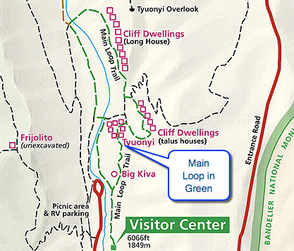
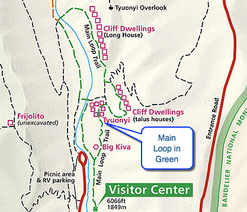

Hike New Mexico
w/ Tom & Ken
Main Loop Trail
| Difficulty | Round-trip | Type | Elev. Chg. | Exposure | Wow Factor | Facilities | Seasons | Photos | By Car |
|---|---|---|---|---|---|---|---|---|---|
| Easy | 1.2 miles | Loop | 200 ft | Full sun | Ancient ruins | Visitor Center | All |


 

- Jun 27, 2005: On the road in, a preview of Pajarito Canyon
- Apr 24, 2013: From the Visitor Center
- Jun 27, 2005: Approaching the remains of the ancient homes
- May 28, 2015: Ruins in the rearview
- Jun 27, 2005: Accessible cave dwellings
- Apr 24, 2013: Embedded holes permeate the area
- Apr 24, 2013: A long view of Long House
- https://www.flickr.com/photos/139088815@N08/27313164970/in/album-72157669594168785
- https://www.flickr.com/photos/139088815@N08/26980047584/in/album-72157669594168785
- https://www.flickr.com/photos/139088815@N08/27517271601/in/album-72157669594168785
- https://www.flickr.com/photos/139088815@N08/27313152020/in/album-72157669594168785
- https://www.flickr.com/photos/139088815@N08/26981181193/in/album-72157669594168785
- https://www.flickr.com/photos/139088815@N08/27313161460/in/album-72157669594168785
- https://www.flickr.com/photos/139088815@N08/27589988995/in/album-72157669594168785
The Main Loop (Nature Trail on some maps) is the biggest tourist attraction of Bandelier National Monument. Virtually every visitor will walk among the ancient ruins and perhaps peek into the cave dwellings embedded into the sheer rock walls of the canyon. Guided walks are available; self-guided walks can be augmented with trail literature. Many different ruins are available to view, from Tyuonyi (a D-shaped pueblo reminiscent of the Chaco style), to cave dwellings, to "Long House", a row of dwellings adjacent to the cave dwellings and augmenting their capacity.